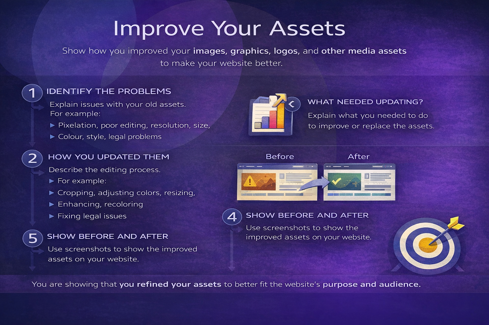

Task 3B(i) Improvements (assets)
Recommend how you could improve the assets used.
Task 3A(iv) – Review effectiveness (Written evaluation)
In this section you must review how effective your assets were when used in your final website. This is a written evaluation in your project log (supported with screenshots).
What you are doing
You are reviewing whether your images, logos, icons, video/audio and other media assets helped your website meet: the purpose of the site, the needs of the target audience, and the requirements of the client brief.
Evidence to include
- Screenshots of your website pages showing the assets in use
- Reference back to your original planning (wireframes / mood board / asset plan)
- Show where the assets appear in the final website (label or mention the page/section)
What to review (for each asset)
For each key asset (e.g. hero image, logo, icons, gallery images, video/audio), write a short paragraph covering the points below:
- Suitability: Does it fit the theme and purpose of the website?
- Audience appeal: Will it appeal to the target audience? Why?
- Quality: Is it clear and professional? (resolution, sharpness, file size)
- Consistency: Does it match your branding? (colour, style, typography)
- Communication: Does it help the user understand the content?
- Function: Does it work correctly on the page? (loads, plays, displays properly)
Strengths
Explain what worked well and why. Be specific (e.g. “The hero banner immediately communicates the theme and makes the homepage feel professional.”).
Weaknesses
Identify any issues you found (e.g. image too large, slow to load, pixelated, inconsistent style, didn’t suit the audience).
Improvements
Explain what you would change if you made the asset again (e.g. compress the image, redesign the logo, change the colour palette, replace a stock image with an original photo, improve cropping).
Link back to the brief
Finish by explaining how your asset choices helped (or limited) your website’s success in meeting the purpose and target audience needs.
Reminder: This section is not a table. It is a written review in your project log, supported by screenshots.